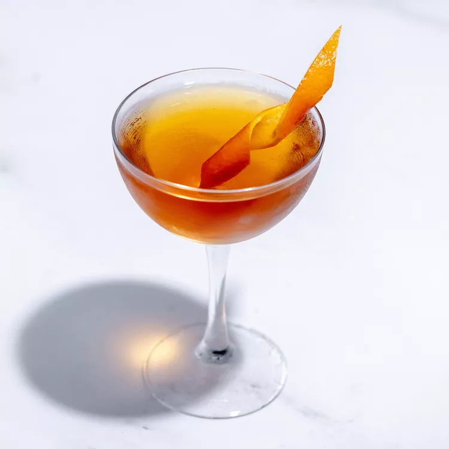

Martinez

Cocktail made with Old Tom gin and vermouth
The cocktail world owes a lot to the classic Martinez. Made with equal parts gin and sweet vermouth, plus maraschino liqueur and bitters, this old-school variation of the Manhattan is often said to have inspired early iterations of the Martini we know today.
Ingredients:
- 1 1/2 ounces gin
- 1 1/2 ounces sweet vermouth
- 1/4 ounce Luxardo maraschino liqueur
- Garnish: orange twist
Steps:
- Add the gin, sweet vermouth, maraschino liqueur, and bitters into a mixing glass with ice and stir until well-chilled.
- Strain into a chilled coupe glass.
- Garnish with an orange twist.
Return To Cocktail list